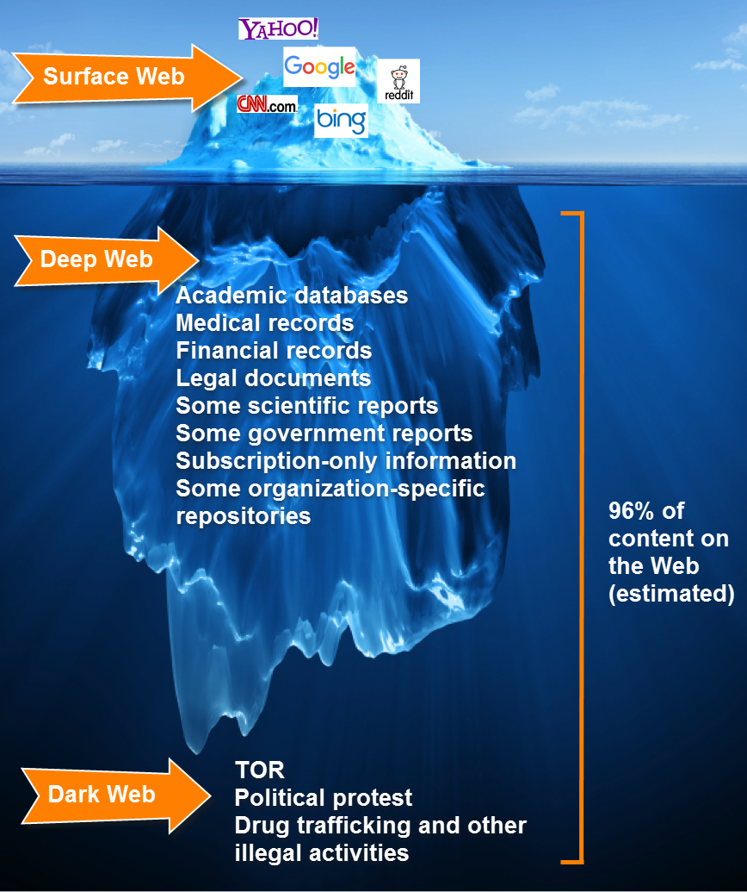

WeLLcOMe
This Website created to find for out more inf
DARKWEB
Dark web: This article is about darknet websites. For the part of the Internet not accessible by traditional web search engines, see Deep web.
The dark web is the World Wide Web content that exists on darknets: overlay networks that use the Internet but require specific software, configurations, or authorization to access. Through the dark web, private computer networks can communicate and conduct business anonymously without divulging identifying information, such as a user's location. The dark web forms a small part of the deep web, the part of the Web not indexed by web search engines, although sometimes the term deep web is mistakenly used to refer specifically to the dark web.
The darknets which constitute the dark web include small, friend-to-friend peer-to-peer networks, as well as large, popular networks such as Tor, Freenet, I2P, and Riffle operated by public organizations and individuals. Users of the dark web refer to the regular web as Clearnet due to its unencrypted nature. The Tor dark web or onionland[10] uses the traffic anonymization technique of onion routing under the network's top-level domain suffix .onion.

Down here, you can find more imformation about DW
click hereüëáüèª
IMFORMATION
ANONYMOUS
Anonymous: is a decentralized international activist/hacktivist collective and movement widely known for its various cyberattacks against several governments, government institutions and government agencies, corporations, and the Church of Scientology.
Anonymous originated in 2003 on the imageboard 4chan representing the concept of many online and offline community users simultaneously existing as an anarchic, digitized global brain or hivemind.[2][3][4] Anonymous members (known as anons) can be distinguished in public by the wearing of Guy Fawkes masks in the style portrayed in the graphic novel and film V for Vendetta.[5] However, this may not always be the case as some of the collective prefer to instead cover their face without using the well-known mask as a disguise. Some anons also opt to mask their voices through voice changers or text-to-speech programs.

Down here, you can find more imformation about DW
click hereüëáüèª
IMFORMATION
TOR
Tor: Project, Inc, became a 501(c)(3) nonprofit in 2006, but the idea of "onion routing" began in the mid 1990s.
Just like Tor users, the developers, researchers, and founders who've made Tor possible are a diverse group of people. But all of the people who have been involved in Tor are united by a common belief: internet users should have private access to an uncensored web.
In the 1990s, the lack of security on the internet and its ability to be used for tracking and surveillance was becoming clear, and in 1995, David Goldschlag, Mike Reed, and Paul Syverson at the U.S. Naval Research Lab (NRL) asked themselves if there was a way to create internet connections that don't reveal who is talking to whom, even to someone monitoring the network. Their answer was to create and deploy the first research designs and prototypes of onion routing.
Down here, you can find more imformation about DW
click hereüëáüèª
IMFORMATION
TERMUX
Termux: is a free and open source terminal emulator for Android which allows for running a Linux environment on an Android device. In addition, various software can be installed through the application's package manager.
Termux installs a minimal base system automatically, and additional packages are available using a package manager. [2]
Most commands available in Linux are accessible as well as built-in Bash commands. There are also several other shells available, such as Zsh and tcsh.[3]
Termux is the first Android terminal application to include a variety of software, unlike other terminal emulators, in which only small or limited utilities provided by Android are available.
Down here, you can find more imformation about DW
click hereüëáüèª
IMFORMATION
HACKING
Hacking: first appeared as a term in the 1970s but became more popular through the next decade. An article in a 1980 edition of Psychology Today ran the headline “The Hacker Papers” in an exploration of computer usage's addictive nature. Two years later, two movies, Tron and WarGames, were released, in which the lead characters set about hacking into computer systems, which introduced the concept of hacking to a wide audience and as a potential national security risk.
Sure enough, later that year, a group of teenagers cracked the computer systems of major organizations like Los Alamos National Laboratory, Security Pacific Bank, and Sloan-Kettering Cancer Center. A Newsweek article covering the event became the first to use the word “hacker” in the negative light it now holds.
This event also led Congress to pass several bills around computer crimes, but that did not stop the number of high-profile attacks on corporate and government systems. Of course, the concept of hacking has spiraled with the release of the public internet, which has led to far more opportunities and more lucrative rewards for hacking activity. This saw techniques evolve and increase in sophistication and gave birth to a wide range of types of hacking and hackers.
Down here, you can find more imformation about DW
click hereüëáüèª
IMFORMATION